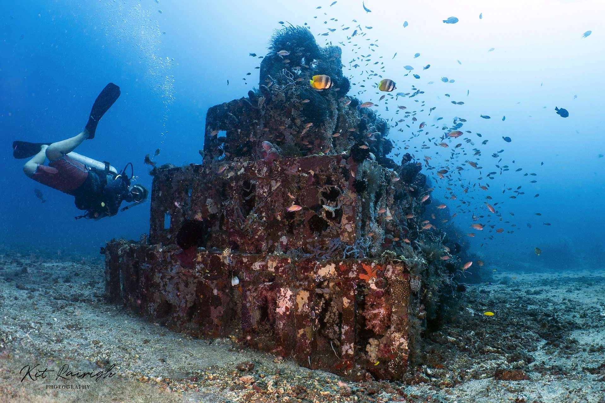
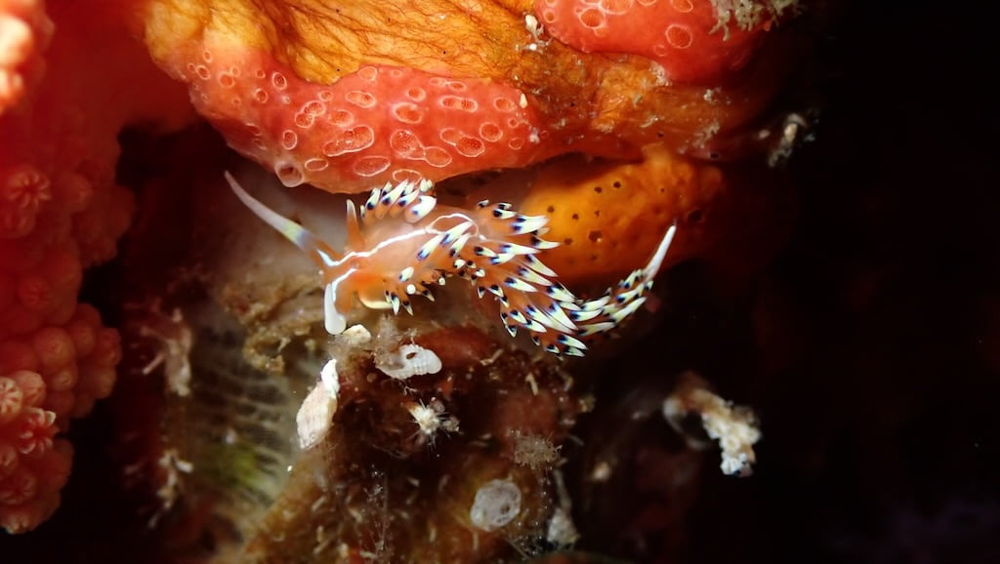

Pirámides
Esta inmersión tiene una profundidad máxima de 40 metros. Los objetos artificiales que forman una especie de pirámides sirven de refugio a diversas especies de criaturas pequeñas, como peces rana payaso , peces pipa fantasma, peces piedra, peces hoja, camarones boxeadores, cangrejos pequeños, ejemplares jóvenes de pez león, peces navaja y muchos más. Este sitio suele estar protegido de las corrientes, lo que lo convierte en un lugar ideal para fotógrafos submarinos y principiantes.
Amed Wall
Se trata de una inmersión en pared, accesible en un barco tradicional balinés (jukung), en el extremo oeste de la bahía de Jemeluk. Normalmente empezamos en aguas poco profundas, a unos 3 metros de profundidad, disfrutando del arrecife y sus diminutos habitantes. Desde aquí, una suave corriente nos lleva un poco más profundo, donde se encuentra la pared, y comienza la inmersión propiamente dicha.
El desnivel, que alcanza en algunos tramos los 40 metros, está cubierto de corales duros y blandos, esponjas barril y gorgonias. En el azul, tenemos la oportunidad de avistar algunos peces pelágicos y, más cerca de la pared, los típicos peces de arrecife. Sin duda, la mejor parte de la inmersión es al final de la bahía, donde la pared da a un mar abierto y poco a poco se convierte en una pendiente arenosa cubierta de gorgonias, corales blandos y duros. Aquí tenemos la mayor probabilidad de avistar tiburones, napoleones, barracudas, jureles y atunes. En la temporada adecuada, se avistan regularmente grandes bancos de jureles en esta inmersión.


Bunutan
Esta es una de nuestras inmersiones favoritas de la zona. Es la más alejada, pero el tiempo que pasamos en el barco se ve recompensado por su belleza. Es una inmersión a la deriva a lo largo de la costa de Bunutan. Con un fondo de suave pendiente y una corriente muy predecible, es nuestra opción para las especialidades de buceo a la deriva. El fondo marino de arena blanca está cubierto de enormes gorgonias y hermosos corales que atraen a los peces de arrecife. Siguiendo la corriente, podríamos encontrarnos con bancos de jureles, peces loro, ocasionalmente tiburones de puntas negras y muchas rayas. La visibilidad suele ser excelente, lo que hace que esta inmersión sea aún más agradable.
Tenemos más puntos de buceo y por supuesto nos adaptamos a ti!!
Contáctanos para más información
Contactar
Síguenos en nuestras redes